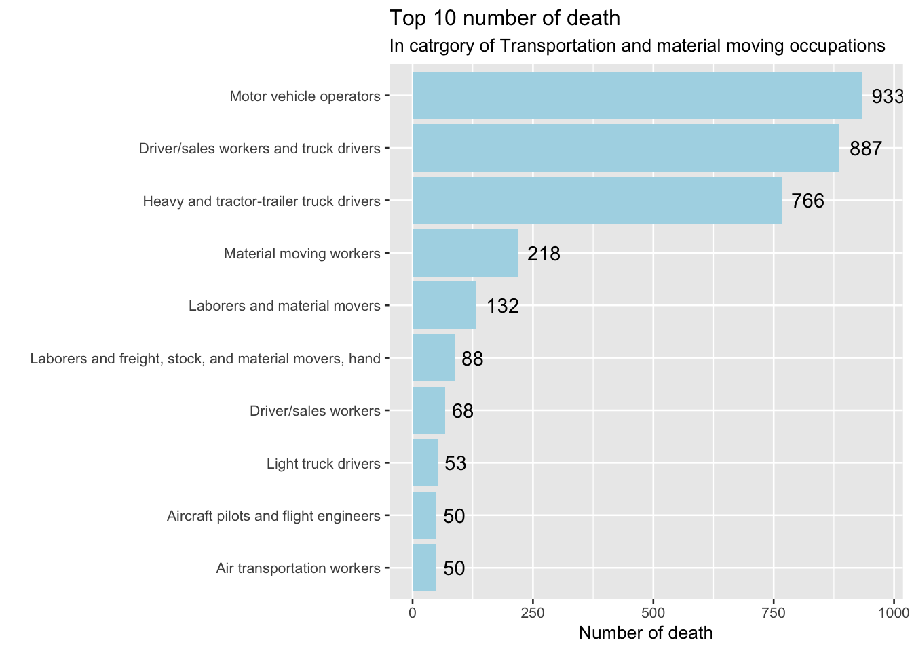
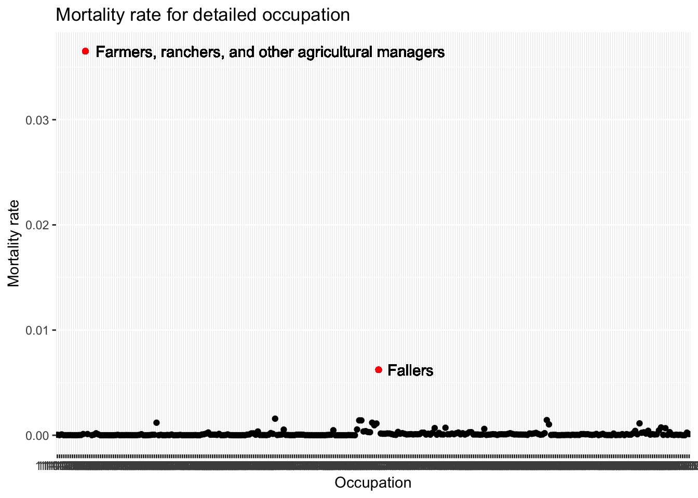
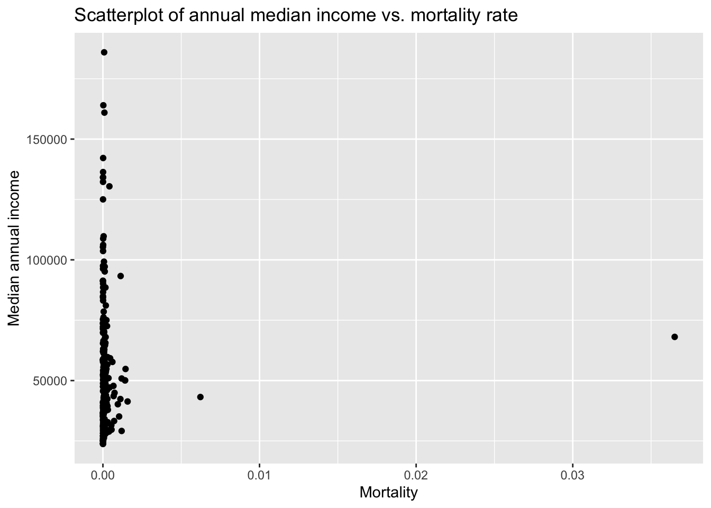

Chapter 5 Results
5.1 What jobs have a significantly high death rate, do they have any features in common?
5.1.1 Classify by major occupation groups
We can tell from this plot that death numbers are high in manual work such as transportation, construction and maintenance. And death numbers are low in intellectual work such as law, IT and education.
 The top 2 causes of death are Transportation accidents and Falls, slips, trips
The least cause of death is Fires and explosions
The top 2 causes of death are Transportation accidents and Falls, slips, trips
The least cause of death is Fires and explosions

Here we go deeper in transportation group. we can conclude that truck drivers have relatively high death number within this category.
5.1.2 Classify by detailed occupations

The occupation with the highest morality rate is “Farmers, ranchers, and other agricultural managers”, the second is “Fallers”.
5.1.2.1 Typical requirement needed to entry these 2 occupations
## # A tibble: 3 × 2
## Entry_Standard Entry_requireme…
## <chr> <chr>
## 1 Typical education needed for entry High school dip…
## 2 Work experience in a related occupation 5 years or more
## 3 Typical on-the-job training needed to attain competency in t… NoneThe entry requirement for Famers, ranchers, and other agricultural managers
## # A tibble: 3 × 2
## Entry_Standard Entry_requireme…
## <chr> <chr>
## 1 Typical education needed for entry High school dip…
## 2 Work experience in a related occupation None
## 3 Typical on-the-job training needed to attain competency in t… Moderate-term o…The entry requirement for Fallers
The Typical requirements needed to entry these 2 occupations are pretty similar.
5.1.3 Top 10 mortality rate occupations
## # A tibble: 10 × 2
## Rank occupation
## <int> <chr>
## 1 1 Farmers, ranchers, and other agricultural managers
## 2 2 Fallers
## 3 3 Tree trimmers and pruners
## 4 4 Commercial divers
## 5 5 Supervisors of farming, fishing, and forestry workers
## 6 6 First-line supervisors of farming, fishing, and forestry workers
## 7 7 Farmworkers, farm, ranch, and aquacultural animals
## 8 8 Athletes and sports competitors
## 9 9 Commercial pilots
## 10 10 Logging workersAmong these 10 occupations, 4 of them are related to “farm” and 3 of them are related to “logging”.
5.1.3.1 Education level distributions of of employees of these occupations
There are 2 NAs among these 10 occupations’ education level distributions:
Supervisors of farming, fishing, and forestry workers and
Logging workers
After drop_na(), we have 8 occupations here. From the plot we can tell that the education level distributions of these 8 occupations are similar. All distributions are right-skewed, which means most of the employees are less educated
5.2 Is there any relationship between mortality and average salary? Does one get paid higher if he is doing dangerous jobs?

From this plot we can tell that there is no significant relationship between mortality and median annual income. Doing dangerous job can’t significantly increase the income.
5.3 Is there any relationship between mortality and education level? If a job has higher requirement of education level, will it be less dangerous?
The overall trend is the higher the education level needed for entry, the lower the median mortality rate. Associate degree should be an outlier because it only has one row of data.
5.4 The relationship between annual income and education lelvel needed for entry

Since income data is right-skewed, using the mean may falsely exaggerate income. Here we use median income as a measure. From the plot we can tell that the higher the education level needed for entry, the higher the median annual income. Income is positively correlated with education level needed for entry.